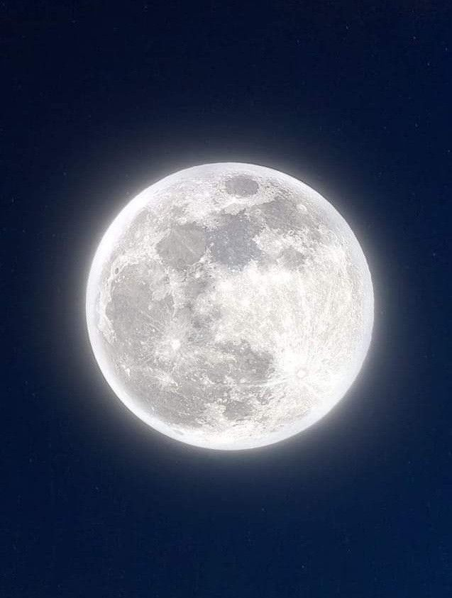

ARTEMIS EXPLORER
Humanity's Return to the Moon
Humanity's Return to the Moon
ON THIS WEBSITE,YOU WILL DISCOVER HOW THE ARTEMIS MISSIONS ARE CHANGING THE FUTURE OF SPACE EXPLORATION.

The Artemis program is NASA's campaign to send astronaunts back to the Moon for the first time since the Apollo missions ended in 1972.Unlike the Apollo missions, Artemis is designed not only to visit the Moon but also to stay therel longer,conduct scientific research,and develop technologies that will enable humans to travel to mars.
NASA is working with international space agencies and commercial companies to make Artemis a global effort. The program combines advanced spacecraft,powerful rockets,and innovative technologies to help humanity explore deeper into space than ever before.
The Moon is much more than Earth's natural satellite.
Scientists believe it holds valuable information about the history of our
Solar System. The Moon's south pole may
contain frozen water ice inside permanently shadowed craters.
This water could provide drinking water,
oxygen for breathing,and hydrogen for rocket fuel,
making future space mission more sustainable.
By learning how to live and work on the Moon,astronauts will gain
experience that will be essential for future journeys to mars.
Every Artemis mission brings humanity one step closer to becoming a multi-planetary civilization
making future space mission more sustainable.

The artemis program consists of several missions,each with an important purpose.
Artemis 1 successfully tested the Space Lauch System rocket and the Orion spacecraft
without astronauts onboard.
Artemis 2 will be the first crewed Artemis mission.Four astronaunts
will travel around the moon before safely
Returning to Earth.
Artemis 3 aims to land astronaunts near the Moons's south pole,marking humanity's return
to the lunar surface after more than 50 years.
Future Artemis missions will help build the Lunar Gateway,support
long-term lunar exploration,and prepare for
missions to Mars

* Artemis is named after the Greek goddess of
the Moon and the twin sister of Apollo.
* The Artemis program will return humans to the Moon
more than 50 years after the last Apollo landing.
* The Space Lauch System (SLS) is NASA's most powerful rocket ever built.
* Orion is designed to carry astronaunts farther into
space than any previous NASA spacecraft.
* The Moon's south pole is one of the most exciting places in
the Solar System because it may contain water ice.